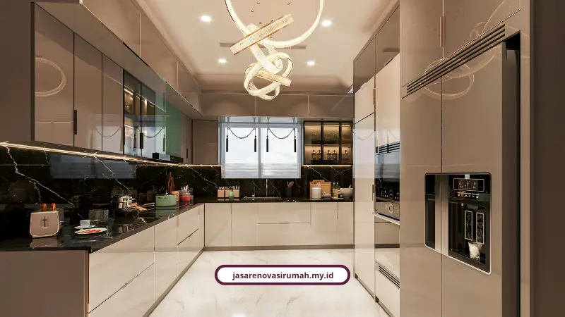
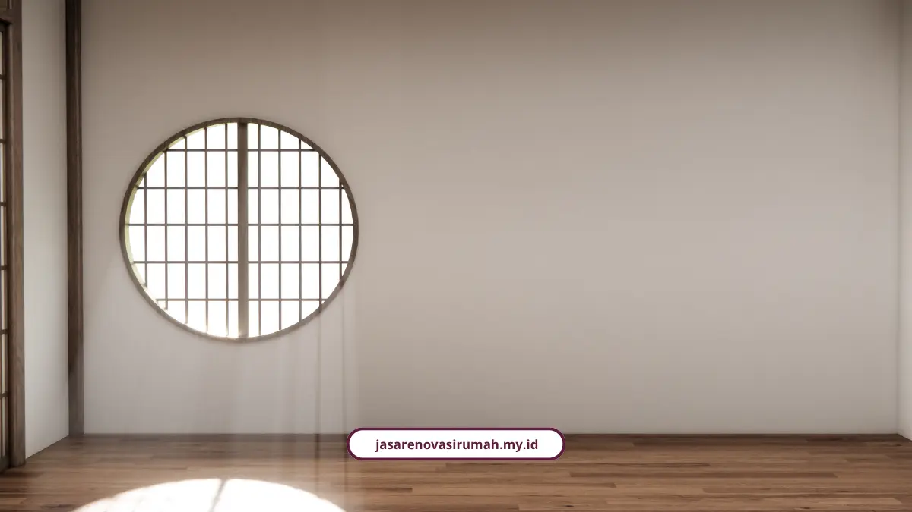

Jasa desain interior Malang dari kami menata ulang ruang rumah Anda supaya lebih estetis, fungsional, dan tahan terhadap cuaca lembap khas Malang. Konsultasi awal sampai visualisasi 3D kami kerjakan sebelum satu paku pun dipasang.
Saya perhatikan banyak orang Malang menunda renovasi interior karena takut hasilnya tidak sesuai bayangan. Padahal dengan proses yang benar, risiko itu bisa ditekan jauh sebelum tukang mulai bekerja.
Kami sudah menangani 150+ proyek interior dan bangunan di seluruh Indonesia selama 12+ tahun, dengan tingkat kepuasan klien 98% lewat dukungan 25+ tenaga ahli. Semua dikerjakan dengan RAB transparan tanpa biaya siluman.
Siapa Saja yang Cocok Pakai Jasa Desain Interior Malang?
Layanan ini paling pas untuk tiga tipe pemilik hunian yang sering saya temui di area Malang Raya.
- Pemilik rumah lama umur 10 sampai 20 tahun yang mau upgrade tampilan sekaligus mengatasi kelembapan dinding.
- Pemilik rumah minimalis atau lahan terbatas yang butuh penataan ruang efisien dan konsep open space.
- Pengusaha properti, kost, atau ruang komersial yang mau menaikkan nilai sewa hingga 30 sampai 50 persen.
Kenapa Desain Interior di Malang Beda dengan Kota Lain?
Karena curah hujan tinggi dan udara lembap Malang bikin dinding serta plafon gampang berjamur kalau material yang dipakai asal-asalan. Bukan sekadar soal selera warna cat.
Clerissa Winona, S.Ds., Founder JDI.ID, menekankan pentingnya sesi konsultasi awal serta visualisasi 3D mendetail agar penataan ruang tidak hanya mengejar estetika visual, tapi juga fungsionalitas dan kenyamanan jangka panjang sesuai gaya hidup penghuni.
Untuk mengatasi karakter cuaca ini, kami biasa memakai cat khusus anti lembap, multiplek berkualitas tinggi, atau rangka aluminium supaya interior tetap awet meski musim hujan panjang.

Gaya Interior Apa yang Lagi Tren di Malang?
Kalau ditanya gaya yang paling diminati klien kami belakangan ini, jawabannya cenderung mengarah ke nuansa natural dan lapang, mirip semangat gaya Japandi yang tenang.
- Minimalis modern dengan konsep open space menyatukan ruang tamu, makan, dan dapur.
- Material alami seperti kayu, rotan, dan batu alam dipadu warna earthy: sage green, terracotta, dusty pink, dan olive.
- Pencahayaan maksimal lewat jendela kaca besar di siang hari dan lampu hidden LED warm white di malam hari.
- Furnitur custom multifungsi seperti kitchen set, plafon mezzanine, Murphy bed, hingga sofa modular.
Berapa Kisaran Biaya Jasa Desain Interior Malang?
Biaya jasa desain interior Malang berkisar Rp100.000 sampai Rp600.000 per m2, atau Anda bisa ambil paket konsultasi mulai Rp1.500.000 untuk 1 sampai 2 ruangan saja.
Sebagai pembanding nasional, Lea Aziz, Ketua Umum Himpunan Desainer Interior Indonesia atau HDII, menjelaskan bahwa acuan fee desainer interior profesional berkisar antara Rp100.000 hingga Rp1.000.000 per meter persegi tergantung tingkat keahlian dan kompleksitas proyek.
Kalau sudah masuk pengerjaan fisik, renovasi ringan mulai Rp2,5 juta per m2, sedangkan renovasi total berkisar Rp3,5 sampai Rp5 juta per m2. Durasi desain sekitar 1 sampai 3 bulan, renovasi dapur 2 minggu sampai 1 bulan, dan pengerjaan rumah dari nol 6 sampai 12 bulan.
Bagaimana Tahapan Kerja Desain Interior Kami?
Sama seperti proyek arsitektur pada umumnya, desain interior juga kami kerjakan lewat tahapan yang runtut, bukan asal jalan.
- Konsultasi awal membahas brief desain, gaya hidup, dan anggaran.
- Survei lokasi untuk pengukuran presisi dan evaluasi kondisi ruangan.
- Konsep dan visualisasi 3D berupa moodboard, denah layout, serta render realistis.
- Revisi dan persetujuan lewat diskusi kolaboratif dengan klien.
- Dokumen kerja teknis mencakup gambar CAD, spesifikasi material, dan RAB.
- Pelaksanaan konstruksi dengan pengawasan berkala di lapangan.
- Serah terima disertai pemeriksaan akhir dan garansi pekerjaan.
Kalau Anda butuh cakupan lebih luas sampai perizinan dan struktur bangunan, layanan ini juga terhubung dengan jasa arsitek Malang kami yang menangani proyek dari nol sampai berdiri, lengkap dengan pendampingan kontrak.
Apa Kata Klien Kami Soal Hasil Interior?
Ibu Sinta, klien di Surabaya, bilang tim arsitek memberi banyak masukan desain yang membuat rumahnya terasa jauh lebih luas dan nyaman dari sebelumnya.
Sementara Pak Budi dari Sukun, Malang, mengaku dapurnya sekarang jauh lebih modern dengan kitchen set aluminium anti rayap, dan ia mengaku puas banget dengan hasilnya.
Yuk Mulai Tata Ulang Rumah Anda Sekarang
Kalau Anda sudah kepikiran mau ubah suasana rumah jadi lebih estetis dan fungsional, tim kami siap bantu dari konsultasi sampai eksekusi. Lihat juga layanan lainnya dari kami di https://jasarenovasirumah.my.id/layanan/jasa-lainnya untuk kebutuhan renovasi total maupun perizinan bangunan.
Menata interior rumah bukan sekadar ganti furnitur, tapi soal bagaimana ruang bisa mendukung aktivitas harian Anda. Dengan konsep yang tepat dan material yang sesuai iklim Malang, hasil akhirnya bisa dipakai bertahun-tahun tanpa harus renovasi ulang.
Pertanyaan yang Sering Ditanyakan Seputar Desain Interior Malang

Naura Regyna Putri
Penulis Profesional & Praktisi Konstruksi
Naura Regyna Putri adalah seorang penulis profesional yang memiliki ketertarikan mendalam pada dunia arsitektur dan konstruksi. Dengan pengalaman bertahun-tahun mengamati tren renovasi rumah, ia aktif membagikan panduan praktis, tips RAB, dan wawasan seputar material bangunan untuk membantu pemilik rumah mewujudkan hunian impian mereka dengan anggaran yang efisien.